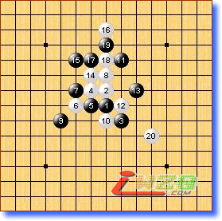
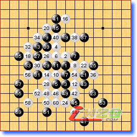
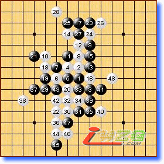
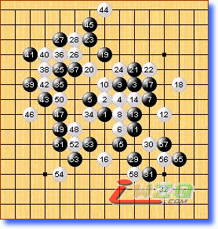
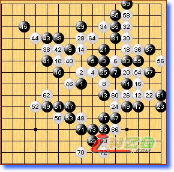
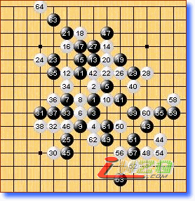

第十届世锦赛A组第十轮略评
#1 第十届世锦赛A组第十轮略评 作者：有志青年 发表时间：2007-8-14 23:18:16
第一局 黑方 Savrasova 白方 Purk 白胜
这盘17估计随手了，17－18是正招。或许是漫长的赛程让棋手们太劳累的缘故吧，后半段的比赛失误明显增多。

第二局 黑方 Karlsson 白方 吴镝 白胜
吴镝完胜的一局，应该是经过精心准备的。实战Karlsson的39致命的败招！42以下攻的很精彩，目前就看山口那盘的结果了。如果山口输了吴镝就是世界冠军！祝贺吴镝！

第三局 黑方 Yamaguchi（山口） 白方 Taimla 白胜
本局事关吴镝能否最终夺冠，所以这盘也是万众瞩目。Taimla今天毫不手软，与昨天一反常态。白22华丽的一手奠定胜局。感谢Taimla！

第四局 黑方 chingin 白方 lio 和棋
虽然，开局对chingin有利，但白棋的防守中规中矩。最终的和棋双方都能接受。

第五局 黑方 Sushkov 白方 Oll 黑胜
本局至黑13与chingin胜karlsson一局一样，白14应该是有力的一手。16的反击似乎太早，行棋至27白棋已经被局限在右上的空间内，黑棋外围子力潜力巨大。此后白棋竭尽所能，可惜Sushkov的防守没有漏洞。最终由于时限紧张，白在下方的防守出问题导致失败。

第六局 黑方 Okabe 白方 Kozhin 和棋
Kozhin的12虽然不强，但是黑棋在诸多的进攻线路中，要找到一条正确之路谈何容易。黑13、15的下法太局促效果不好。kozhin终于有了第一盘和棋。
